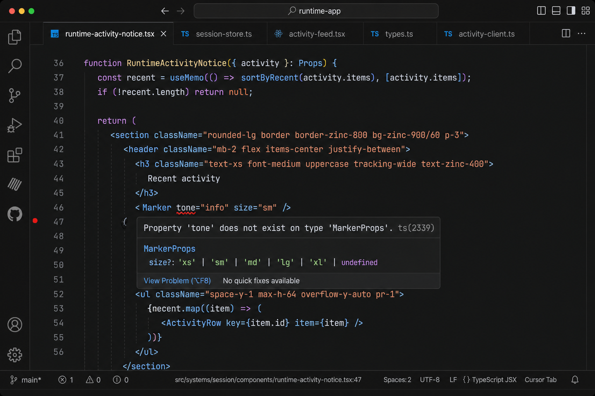
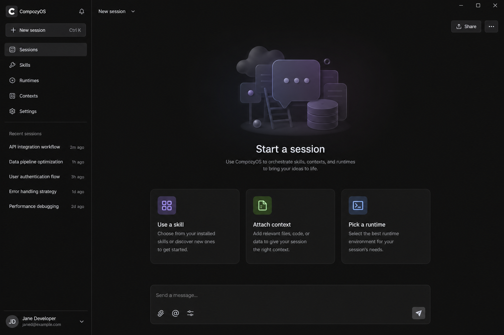

01
Image tile
36×36 photo · filename · mono size · ×The ready imageName is the original filename. Size is mono. Dimensions live in
title. The well is a crop of the screenshot — that is the payload the agent will see.
A 36×36 · radius-md · hairline
B 12px name, truncate
C 10.5px mono size
D 22px ×, danger on hover
02
File well
same tile · extension mark instead of a photoPDF · MD · TXTSame 36×36 well, same ×. Type is the three-letter mark in mono — not a Lucide glyph and not a tinted icon. No fake first-page preview. v1 allows these three plus images; everything else is a rejected tile.
03
Tile states
color AND structure · ready stays calmThe four states
ready is the default — no chip. uploading is persist-before-send. error is a recoverable persist/size failure. rejected is a type the composer will not keep (ZIP, SVG, Office) — not Markdown.

PDF
04
Many items, one row
horizontal track · edge fades · never wrapRest — more to the rightThe field does not grow. Six tiles stay on one line; the overflowing edge dissolves into the field fill (
--elevated). Same pinned-edge anatomy as workspaces, but not the black glass veil — that fill is charcoal, not frosted glass. No scrollbar, no +N. Each tile keeps its name so one screenshot can come out.


Scrolled — both fades
data-scroll="mid" for the lab. Both edges dissolve into the field fill so the operator can see there is more in either direction. Trackpad, wheel, or Tab onto a × (the tile scrolls clear of the fade). No grab-drag — drop still lands on the field.05
Rejected alternatives
same grammar · these are not the tile22px filename chipds-core
.chip has no well. A screenshot without a thumb is a filename the agent cannot see. A PDF without an extension mark is a chip you cannot scan. Never for attachments.
goal-chip.png
flatten-spec.pdf
Second dockDocks are permission/clarification — daemon-owned. Draft attachments are composer-local and must vanish with send.
Attachments6 files
06
Drop overlay
covers the composer root · no modalWhile draggingThe field takes
accent-dim as its one extra accent use. Idle composer never shows this hint.Drop filesImages, PDF, Markdown, or text
07
Transcript
frames for images · file cards for PDF/MD/TXTSent imageHairline,
radius-lg, caption inset 8px on hover/focus. UserMessage already switches on part.type === "image"; this is the missing visual.08
Bar button
26px ghost · paperclip · after runtime · never a second sendAttachLucide
paperclip now that the picker takes images and files. Network’s unwired paperclip is a different product (/attach = URL / capability ref). Hit target 26×26. aria-label="Attach".
default · pressed (picker open)